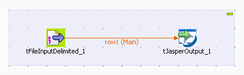
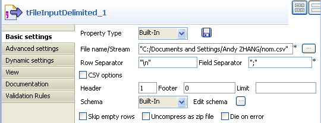
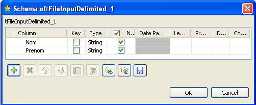
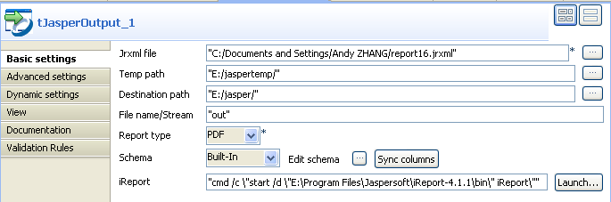

Ce composant est étroitement lié à l'outil de reporting de Jaspersoft, iReport. Il lit et traite des données d'un flux d'entrée afin de créer un rapport à l'aide d'un modèle de rapport JRXML défini dans iReport.
|
Famille de composant |
Business Intelligence/Jasper | |
|
Fonction |
Le composant tJasperOutput lit et traite des données d'un flux d'entrée afin de créer un rapport à l'aide d'un modèle de rapport JRXML défini dans iReport. | |
|
Objectif |
Ce composant vous permet d'utiliser l'outil iReport de Jaspersoft afin de créer un rapport dans des formats riches. | |
|
Basic settings |
Jrxml file |
Fichier du modèle de rapport créé dans iReport. |
|
|
Temp path |
Chemin d'accès aux fichiers temporaires. |
|
|
Destination path |
Chemin d'accès au fichier final du rapport. |
|
|
File name/Stream |
Nom du rapport final. |
|
|
Report type |
Type du fichier du rapport final. |
|
Schema et Edit schema |
Un schéma est une description de lignes, i.e., il définit le nombre de champs qui sont traités et passés au composant suivant. Le schéma est soit local (Built-in) soit distant dans le Repository. | |
|
|
|
Built-in : Le schéma est créé et conservé pour ce composant seulement. Voir également le Guide utilisateur de Talend Open Studio. |
|
|
|
Repository : Le schéma existe déjà et est stocké dans le Repository. Ainsi, il peut être réutilisé. Voir également le Guide utilisateur de Talend Open Studio. |
|
|
Sync columns | Permet de synchroniser le schéma du fichier d’entrée avec le schéma du fichier de sortie. La fonction Sync ne s’affiche que lorsqu’une connexion de type Row est connectée au composant de sortie. |
|
|
iReport |
Editez la commande pour fournir le chemin d'accès au fichier d'exécution de iReport, par exemple en remplaçant __IREPORT_PATH__\ par E:\Program Files\Jaspersoft\iReport-4.1.1\bin\, ou en saisissant le chemin d'accès complet au fichier d'exécution, par exemple "E:\Program Files\Jaspersoft\iReport-4.1.1\bin\iReport.exe". |
|
|
Launch |
Cliquez sur ce bouton pour lancer iReport. |
|
Advanced settings |
tStatCatcher Statistics |
Cochez cette case pour collecter les données de log au niveau du composant. |
|
Utilisation |
Ce composant est étroitement lié à l'outil de reporting de Jaspersoft, iReport. Il lit et traite des données d'un flux d'entrée afin de créer un rapport à l'aide d'un modèle de rapport JRXML défini dans iReport. | |
|
Limitation |
n/a | |
Le Job suivant lit des données d'un fichier .csv et crée un rapport .pdf basé sur un modèle de rapport .jrxml existant. Notez que le fichier de modèle doit avoir été créé via l'outil iReport de Jaspersoft à partir d'un fichier partageant le même schéma avec le fichier source .csv du Job.
Glissez-déposez les composants suivants de la Palette dans l'espace de modélisation graphique : tFileInputDelimited et tJasperOutput.
Reliez le tFileInputDelimited au tJasperOutput à l'aide d'un lien Row.

Double-cliquez sur le composant tFileInputDelimited afin d'afficher sa vue Basic settings.
Sélectionnez Built-In dans la liste déroulante Property Type.
![[Note]](../images/note.png)
Vous pouvez sélectionner Repository dans la liste Property Type afin de renseigner automatiquement les champs correspondants si la métadonnée a été stockée localement dans le Repository. Pour plus d'informations concernant les métadonnées Metadata, consultez le Guide utilisateur de Talend Open Studio.
Renseignez le champ File name/Stream en saisissant le chemin d'accès et le nom du fichier source, par exemple "C:/Documents and Settings/Andy ZHANG/nom.csv".
Laissez les paramètres par défaut pour les champs Row Separator et Field Separator. Cependant, si nécessaire, vous pouvez les modifier selon vos besoins.
Saisissez 1 dans le champ Header et 0 dans le champ Footer. Laissez le champ Limit vide. Cependant, si nécessaire, vous pouvez les modifier selon vos besoins.
Sélectionnez Built-In dans la liste déroulante Schema puis cliquez sur Edit schema afin de définir la structure des données du fichier d'entrée. Dans ce cas, le fichier d'entrée contient deux colonnes : Nom et Prenom.

Double-cliquez sur le tJasperOutput pour afficher sa vue Basic settings et configurer ses propriétés.
Saisissez le chemin d'accès complet au fichier de modèle du rapport créé via l'outil iReport de Jaspersoft dans le champ Jrxml file. Vous pouvez également cliquer sur le bouton [...] afin de parcourir votre système.
Le schéma du fichier utilisé pour créer un modèle .jrxml via iReport, doit être le même que celui du fichier source utilisé pour créer le rapport.
Dans le champ Temp path, saisissez le chemin d'accès aux fichiers temporaires générés durant l'exécution du Job. Vous pouvez également cliquez sur le bouton [...] afin de parcourir votre système.
Saisissez le chemin d'accès au rapport final généré durant l'exécution du Job, dans le champ Destination path. Vous pouvez également cliquer sur le bouton [...] afin de parcourir votre système.
Saisissez le nom du rapport final généré durant l'exécution du Job, dans le champ File name/Stream.
Dans le champ Report type, sélectionnez le format du rapport final.
Cliquez sur Sync columns afin de récupérer le schéma du composant précédent.
Saisissez le chemin d'accès au fichier d'exécution de iReport dans le champ iReport, en remplaçant par exemple __IREPORT_PATH__\ par E:\Program Files\Jaspersoft\iReport-4.1.1\bin\. Vous pouvez cliquer sur le bouton Launch afin de lancer iReport.
Cette étape n'est pas obligatoire. Cependant, elle vous permet d'accéder à l'outil iReport pour effectuer les opérations nécessaires, comme la création d'un modèle de rapport, etc.